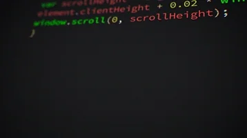

Bienvenue sur <easyDev> !
Le monde du Web t’attire, mais tu n’y connais pas encore grand-chose ? Le jargon geek te laisse
perplexe ? Pas de panique !
<easyDev> est spécialement conçu pour te guider à travers les bases du
développement web.
Que tu veuilles apprendre à créer des pages web avec
HTML, styliser ton contenu avec du CSS, ou rendre ton site
interactif avec JavaScript, tu es au bon endroit.
Ce cours te permettra de comprendre facilement les concepts fondamentaux et de t’immerger
progressivement dans l’univers passionnant du développement web.
À ton rythme, tu maîtriseras les outils essentiels pour créer des sites modernes et
fonctionnels.
Prêt à relever le défi ?

Mais d'abord, c'est quoi un développeur web ?
Un développeur web est un professionnel qui crée et maintient des sites web. Il utilise
différents
langages de programmation pour construire les pages web, les styliser et les rendre
interactives.
Son travail consiste à transformer des idées et des concepts en expériences numériques
accessibles
sur internet. Il veille également à ce que les sites soient fonctionnels, esthétiques et adaptés
à
tous les appareils.
Mais encore ?
Imagine un chef cuisinier. Tout comme un chef utilise des ingrédients pour concocter des plats
délicieux, un développeur web utilise différents langages de programmation pour créer des sites web
sensationnels. Ils jonglent avec HTML, CSS et JavaScript pour donner vie à des pages web, les
embellir et les rendre dynamiques.
HTML, CSS, Javascrip...
Quésaco ?
HTLM
HTML est le squelette de ta page, structurant le contenu. Imagine que tu veux créer une carte
d'invitation numérique. Tu utiliseras HTML pour définir le titre, le texte principal et même les
images.
CSS
C'est le styliste personnel de ton site web. CSS apporte de la couleur, des styles et de la mise en
page à ton contenu.
JavaScript
C'est le magicien qui ajoute des interactions et des animations. JavaScript transforme les pages
statiques en expériences dynamiques. Grâce à lui, tu peux faire apparaître une alerte amusante quand
quelqu'un clique sur ta carte d'invitation.
Alors, prêt à découvrir les bases avec moi ?
Les bases du développement web sont à ta portée. Avec un peu de pratique, tu deviendras rapidement à
l'aise avec HTML, CSS, et JavaScript. Allez, viens explorer et crée ton premier site web dès
maintenant !
Allez, viens, promis c'est cool !